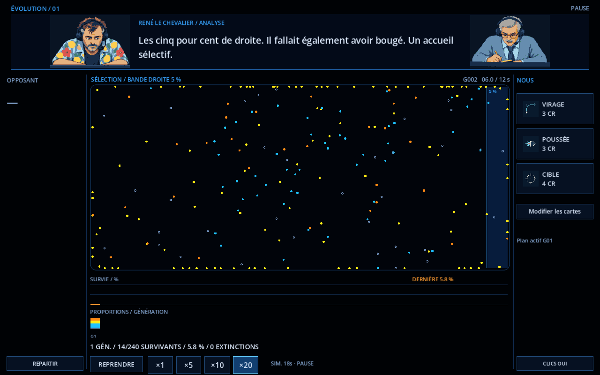
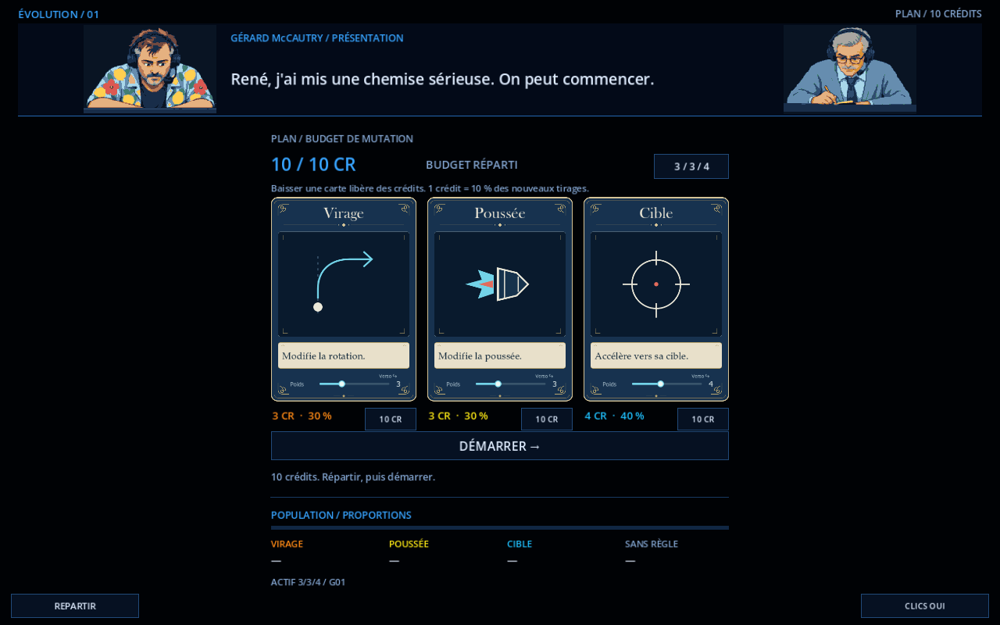
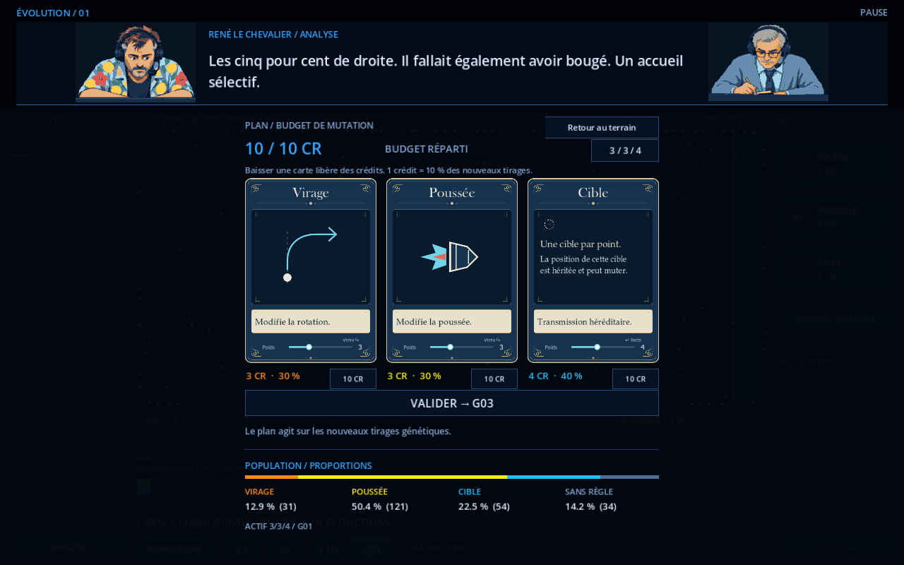
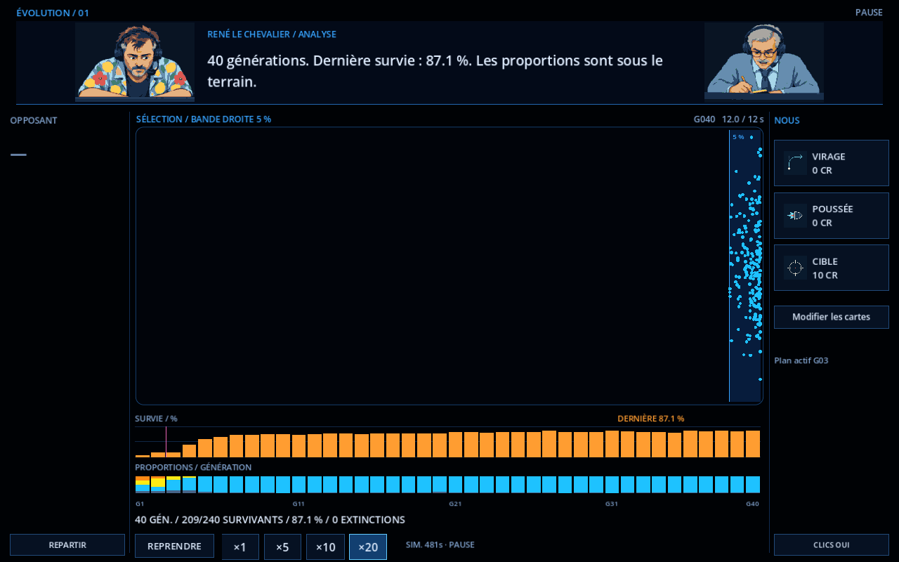

Après la préparation, le terrain dispose de 70 % de la largeur, avec une bande de 15 % de chaque côté. Les grandes cartes se rouvrent depuis « Modifier les cartes » ; la partie se met en pause et retrouve son état de pause précédent au retour.




La bande Opposant réserve l’emplacement du futur adversaire ; cette révision conserve la simulation existante. Cartes approuvées conservées : Virage V2 vers la droite, Poussée P4 et Cible 06.